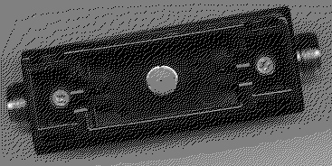

Previous
Next
TOC
Fan Out Unit (Schnittstellenvervielfacher):
Mehrere Stationen (DTE) können über Dropkabel an einen Schnittstel-
lenvervielfacher angeschlossen werden. Dieser ist wiederum mit einem
Transceiver verbunden oder im ,,Stand alone'' (Einzel-)Betrieb. Fan
Out Units dürfen nur im Einzelbetrieb kaskadiert werden.
Repeater:
Die Segmentlänge ist durch die Dämpfung am Ethernet Bus (Yellow
Cable) auf 500 Meter begrenzt. Die Repeater verbinden zwei Segmente,
sie verstärken und regenerieren die Daten. An einem Multiportrepeater
können mehrere Segmente (auch unterschiedliche, zum Beispiel lOBase2)
angeschlossen werden. Die Transceiver, an die die Repeater angeschlos-
sen sind, müssen mit der Einstellung ,,SQE-off'' betrieben werden.
Bridge: (Brücke)
Zwei von der Signallaufzeit unabhängige Netzwerke werden mittels
Brücken verbunden. Brücken haben eine Filterfunktion; durch die Erken-
nung beziehungsweise Auswertung der Zieladressen werden nur die ent-
sprechend adressierten Telegramme jeweils in das andere Netz übertra-
gen.
IEEE 802.3 lOBase5 Eckdaten
übertragungsrate: 10 Mbit/s
Zugriffsveffahren: CSMA/CD
Maximale Signallaufzeit zwischen 2 Stationen: 25,56 mikrosekunden
Physikalisches Medium: Ethernetkabel ,,Yellow Cable'', 50 Ohm +- 2 Ohm
Ausbreitungsgeschwindigkeit: 0,78 c
Biegeradius: 75/150 mm
Dämpfung:< 8,5 dB /5OO Meter /10 MHz beziehungsweise < 6 dB/500 Meter/5 MHz
Signalreflektionen auf dem Yellow Cable: < 7 %
Segmentlänge: max. 500 Meter oder L= (2n+1) * 23,4 m - wobei die
Länge ein ungerades Vielfaches von 23,4 m sein muß.
Der Bus muß an beiden Enden (N-Stecker) mit 50 Ohm abgeschlossen und
soll an einem Ende geerdet sein. Der Mindestabstand zu Starkstromka-
beln beträgt 30 cm (in industrieller Umgebung 50 cm). Transceiver
werden in 2,5 m Abständen (am Yellow Cable gekennzeichnet) an den Bus
geklemmt (Vampirtechnik).

Bei Industrienetzen werden Transceiver mit N-Tap beziehungsweise Ka-
belsegmente mit N-Stecker benutzt. Die Anzahl der kaskadierten Repea-
ter beträgt maximal 4 Stück das heißt die maximale Länge der Koaxial-
kabel beträgt somit 2500 Meter.
weiterblättern
Kapitel IEEE 802.3 (10Base5), Seite 2